### Libraries
library("tidyverse")
library("patchwork")
library("lubridate")
library("kableExtra")
library("gtsummary")
library("lubridate")
devtools::install_github("data-edu/tidyLPA")
if (!require(tidyLPA)) {
install.packages("tidyLPA")
}
# installed from previous lectures
library("equatiomatic")
library("tidyverse")
library("ggdag")
library("brms")
library("rstan")
library("rstanarm")
# library("tidybayes")
library("bayesplot")
library("easystats")
library("kableExtra")
library("broom")
# rstan options
rstan_options(auto_write=TRUE)
options(mc.cores=parallel::detectCores ())
theme_set(theme_classic())

Objectives
- Understand why a linear model is a special case of a âgeneralised linear model.â
- Understand how to write and interpret three families of generalised linear models:
- logistic regression models, which apply to binary responses;
- Poisson regression models, which apply to rates;
- Zero-inflated poisson models, in which rates data contain an over-abundance of zeros. Here, we will also discuss over-dispersed poisson models.
- Ordinal regression model, which apply to data with multi-nomial outcomes, for example survey responses (e.g. âlittle,â ânone,â âmoreâ). Here we will also discuss monotonic predictors.
Introduction
Recall that a regression model combines data from a sample with the tools of probability theory to infer features of some unobserved population. We have discussing how the mechanics of moving from a sample to a population carries uncertainty. In a nutshell, regression is guesswork. Our task is to not to remove uncertainty but rather to quantify it. Our regression workflow is built on two imperatives: (1) to clarify our assumptions; (2) to clarify our decisions.
It is fortunate that we live in an ordered universe. Although at the level of particle physics, the universe might be random, at the scale of âmedium-sized dry goodsâ1, the world is ordered.
So far, our models have assumed that response data in our models are sampling from a normal distribution. There are two parameters that we need to estimate for a normal distribution, the mean, and the variance. The linear regression model is a special case of the generalised linear regression model, in which responses may sample from distributions other than the normal distribution.
Link function
We can write our linear model in a different format, which makes its assumptions explicit (recall that we want to clarify our assumptions)"
\[ y_i \sim Normal ( \mu_i, \sigma)\\ \mu_i \sim \alpha + \beta x_i \\ \alpha \sim Normal(0,\sigma_{\alpha}) \\ \sigma_{\alpha} \sim Normal(0,1) \\ \beta \sim Normal(0,10) \\ \sigma \sim Exponentional (1) \\ x_i \sim Normal (0, 1) \]
The previous examples describes a regression model that assumes we are sampling from a normal distribution. There is no link function required to transform the expectation for the model estimates. When we are not sampling from a normal we require a link function
Logistic regression
Logistic regression with a single co-variate.
First letâs graph the home ownership
hist(nz$HomeOwner)
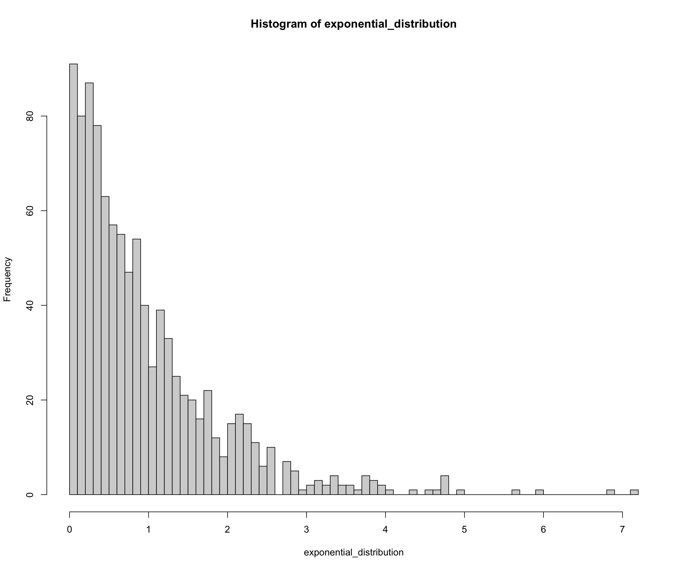
From the graph, we can see response distribution is fully bimodal (excluding the NAs).
The model requires a binomial link function:
\[Home \sim Binomial (Ownership, Pr)\]
The binomial link function does two things:
- first, it maps the range \((0, 1)\) to \(-(\infty, -\infty)\).
- second, it maps these values back to the unit range (see: Gelman, Hill, and Vehtari (2020) )
The logistic function satisfies the first task:
\(logit(x) = log\frac{x}{(1-x)}\)
and the inverse logit function does 2:
\(logit^-1(x) = log\frac{e^x}{(1-e^x)}\)
In R these functions are written:
logit <- qlogis
invlogit <- plogis
For logistic regression, the functions are employed as follow:
\[ \Pr(y_i = 1) = p_i \\ logit(p_i) = \alpha + \beta x_i \\ \Pr(y_i = 1) = logit^{-1}(\alpha + \beta x_i) \]
We can write a generalised linear model that predict home ownership as follows:
home <- glm(HomeOwner ~ 1, data = nz,
family = "binomial")
\[ \log\left[ \frac { P( \operatorname{HomeOwner} = \operatorname{1} ) }{ 1 - P( \operatorname{HomeOwner} = \operatorname{1} ) } \right] = \alpha \]
Which gives us the following result
parameters::model_parameters(home)
Parameter | Log-Odds | SE | 95% CI | z | p
-------------------------------------------------------------
(Intercept) | 1.46 | 0.05 | [1.36, 1.55] | 30.38 | < .001Or plugging this into the equation:
# this is how to quickly generate the equation
equatiomatic::extract_eq(home, use_coefs = TRUE)
\[ \log\left[ \frac { \widehat{P( \operatorname{HomeOwner} = \operatorname{1} )} }{ 1 - \widehat{P( \operatorname{HomeOwner} = \operatorname{1} )} } \right] = 1.46 \]
How do we interpret this result?
We may use the plogis function to obtain the probability
Interpretation of the result
The probability of an NZAVS participant owning their own home is pr = 81.
Logistic regression with a single co-variate.
Letâs predict home ownership by income.
Workflow: center and scale predictors
First center/scale our predictor:
# center and scale household income
nz$Household.INC_s <- scale(nz$Household.INC)
nz['Household.INC_s'] = as.data.frame(scale(nz$Household.INC))
# how much is a standard deviation -- which will represent a 1 unit change for the regression coefficient?
sd( nz$Household.INC, na.rm = TRUE ) # 95,090
[1] 95090.79What is the mean household income in 2018?
mean( nz$Household.INC, na.rm = TRUE )
[1] 112877.1Model syntax
We write the model as follows
home2 <- glm(HomeOwner ~ Household.INC_s, data = nz,
family = "binomial")
Results:
rs2<-parameters::model_parameters(home2)
rs2
Parameter | Log-Odds | SE | 95% CI | z | p
-----------------------------------------------------------------
(Intercept) | 1.58 | 0.05 | [1.48, 1.69] | 29.37 | < .001
Household.INC_s | 0.72 | 0.08 | [0.57, 0.89] | 8.86 | < .001plot(rs2)
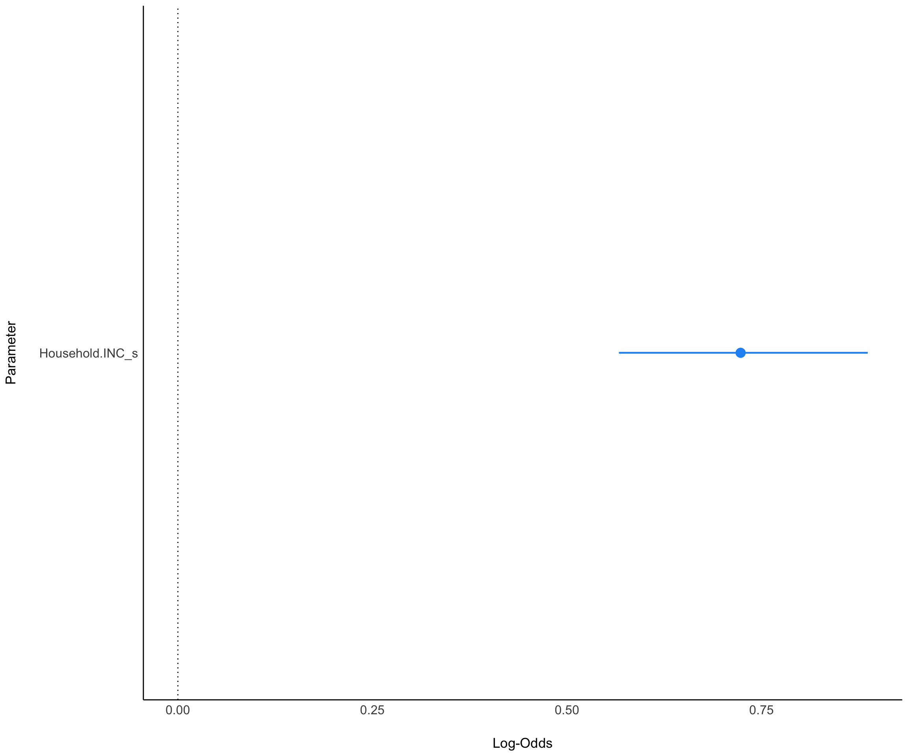
Which we can write:
# this is how to quickly generate the equation
equatiomatic::extract_eq(home2, use_coefs = TRUE)
\[ \log\left[ \frac { \widehat{P( \operatorname{HomeOwner} = \operatorname{1} )} }{ 1 - \widehat{P( \operatorname{HomeOwner} = \operatorname{1} )} } \right] = 1.58 + 0.72(\operatorname{Household.INC\_s}) \]
How do we interpret this model?
Letâs use the report package
report::report(home2)
We fitted a logistic model (estimated using ML) to predict HomeOwner with Household.INC_s (formula: HomeOwner ~ Household.INC_s). The model's explanatory power is weak (Tjur's R2 = 0.04). The model's intercept, corresponding to Household.INC_s = 0, is at 1.58 (95% CI [1.48, 1.69], p < .001). Within this model:
- The effect of Household.INC_s is significantly positive (beta = 0.72, 95% CI [0.57, 0.89], p < .001; Std. beta = 0.73, 95% CI [0.57, 0.89])
Standardized parameters were obtained by fitting the model on a standardized version of the dataset. 95% Confidence Intervals (CIs) and p-values were computed using Thereâs lots of mention of p-values and power claims in the automated report, but what do these words practically mean?
Workflow: graph your results
We are cultivating a habit of graphing our results. Letâs put this habit to virtuous use.
Hereâs a shortcut for obtaining a quick, investigative plot:

The slightly longer syntax for a ggeffects graph is:
And here we find a curious feature of our data. Income is diffuse. We have someone that makes over 25 standard deviations more than the average income.
hist(nz$Household.INC, breaks = 1000)
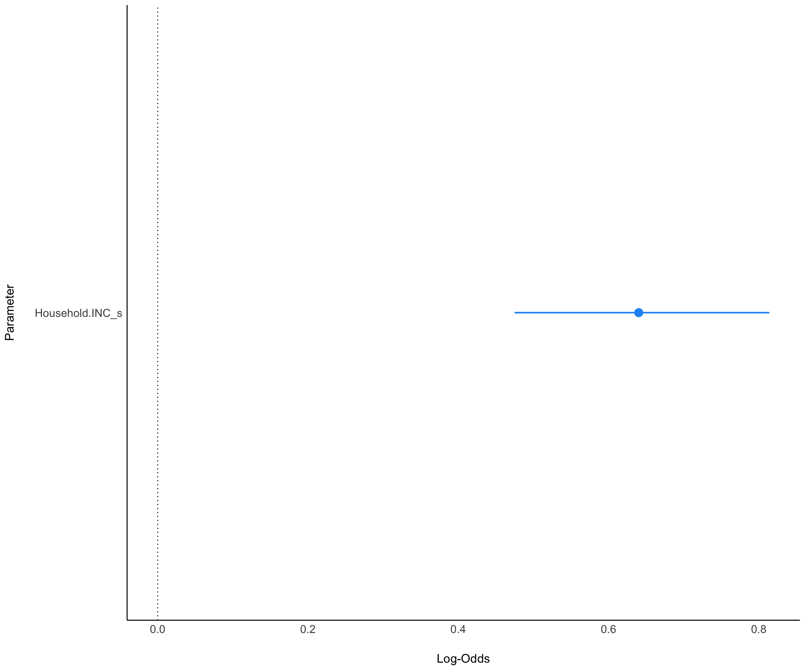
Although we graph home ownership, we forgot to graph Household income.
Before launching into a model, your workflow should include graphing your predictors as well as your responses
The range of incomes is: 0, 2.5^{6}.
Note that we also have 8 who report making less than 10000,
Sensitivity of the data to outliers?
Letâs re-run the model while eliminating the extremely rich, and restrict focus to 98% of the data. This restriction would appear to be justified. It would not be surprising if very rich people were to own their own homes.
[1] 0.979438home2.1 <- glm(HomeOwner ~ Household.INC_s, data = nz2,
family = "binomial")
parameters::model_parameters(home2.1)
Parameter | Log-Odds | SE | 95% CI | z | p
-----------------------------------------------------------------
(Intercept) | 1.60 | 0.05 | [1.50, 1.71] | 29.21 | < .001
Household.INC_s | 0.78 | 0.08 | [0.62, 0.95] | 9.27 | < .001Note that we need a sensible range. The lowest value is not 4 SD from the mean
hist(nz2$Household.INC_s)
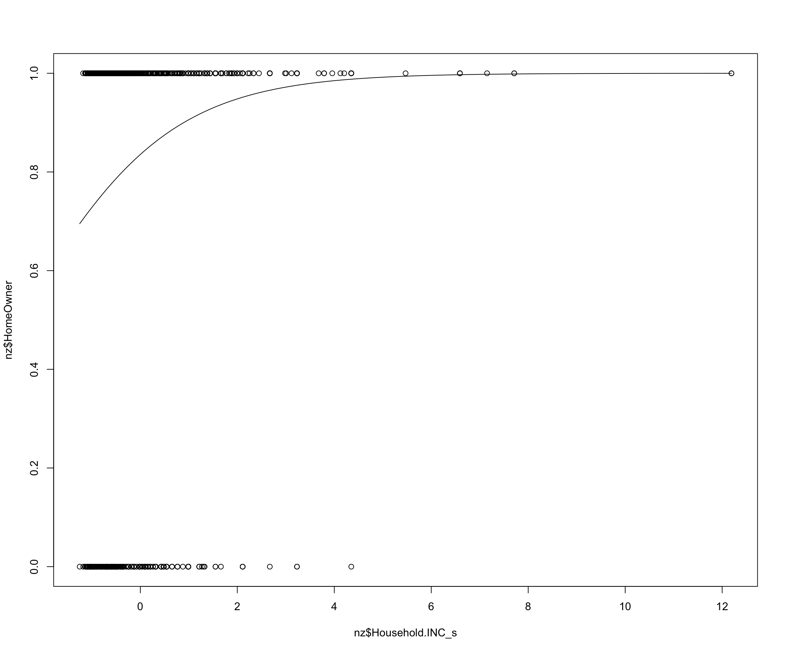
range(nz2$Household.INC_s, na.rm = T)
[1] -1.187046 3.755599Does this matter? Not necessarily. Linear regression does not require that the predictors sample from a normal distribution. This should be obvious, as we have used categorical predictors (e.g. Male/Not_Male). However it is worth explicitly stating. I have heard people who should know better express confusion on this point. Of course, that there are no parametric assumptions for your predictor variables does not let you off the hook. In this case, the extreme values might be distorting our inference.
Letâs write a model with the diminished dataset.
#range(nz$Household.INC_s, na.rm = T)
mp2 <- plot(ggeffects::ggpredict(home2,
terms = "Household.INC_s[all]")) + scale_y_continuous(limits = c(0, 1)) +
scale_x_continuous(limits = c(-1.2, 4))
mp2.1 <- plot(ggeffects::ggpredict(home2.1,
terms = "Household.INC_s[all]")) + scale_y_continuous(limits = c(0, 1)) +
scale_x_continuous(limits = c(-1.2, 4))
library(patchwork)
mp2 + mp2.1 + plot_annotation(title = "Comparison of logistic regression models with tranformations",
tag_levels = 'a') +
plot_layout(guides = 'collect')
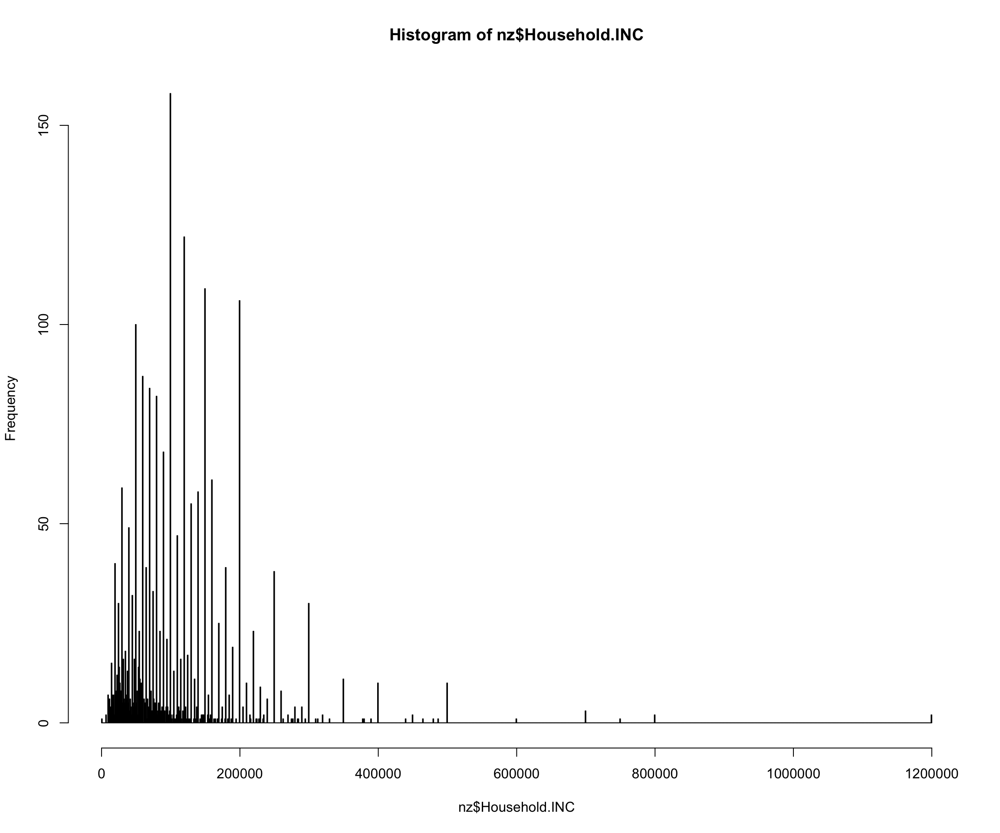
Note the trick I used here.
scale_x_continuous(limits = c(-1.2, 4))
Allowed me to constrain both graphs to the same x-axis scale. If I left this out the graphs would have looked like this:
#range(nz$Household.INC_s, na.rm = T)
mp2 <- plot(ggeffects::ggpredict(home2,
terms = "Household.INC_s[all]")) + scale_y_continuous(limits = c(0, 1))
mp2.1 <- plot(ggeffects::ggpredict(home2.1,
terms = "Household.INC_s[all]")) + scale_y_continuous(limits = c(0, 1))
library(patchwork)
mp2 + mp2.1 + plot_annotation(title = "Comparison of logistic regression models with tranformations",
tag_levels = 'a') +
plot_layout(guides = 'collect')
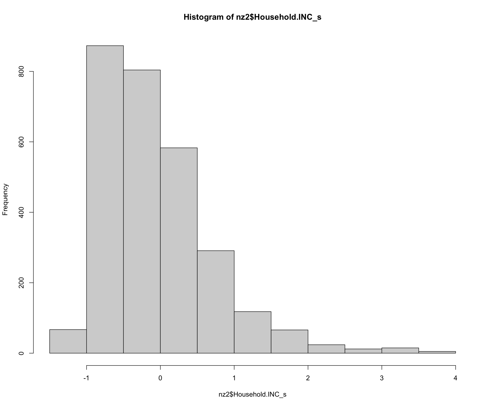
The models really are the practically identical, however figure plots all the data, however the outlier creates a visual impression of difference.
Lesson:
Take care in the x and y axis scales that you loose when displaying your data and your results
Else:
You can perform further checks using the following code, however, it should be apparent from the preceding graph that the models two models do not vary.
check1 <- performance::check_model(home2)
check1
check2 <- performance::check_model(home2.1)
check2
Logistic regression model with a categorical covariate
Letâs use the GenCohort variable.
mg1 <- glm(HomeOwner ~ GenCohort, data = nz, family = "binomial")
parameters::model_parameters(mg1)
Parameter | Log-Odds | SE | 95% CI | z | p
--------------------------------------------------------------------------------------------
(Intercept) | 2.13 | 0.10 | [ 1.94, 2.34] | 20.68 | < .001
GenCohortGen_Silent * born< 1946 | 0.26 | 0.28 | [-0.26, 0.85] | 0.94 | 0.347
GenCohortGenX * born >=1961 & b.< 1980 | -0.62 | 0.13 | [-0.87, -0.38] | -4.90 | < .001
GenCohortGenY * born >=1980 & b.< 1996 | -1.87 | 0.14 | [-2.15, -1.59] | -13.00 | < .001
GenCohortGenZ * born >= 1996 | -4.91 | 1.04 | [-7.80, -3.30] | -4.74 | < .001What does this mean? Letâs graph the results
Lets stratify by income
Household.INC_s
mg2 <- glm(HomeOwner ~ GenCohort + Household.INC_s, data = nz, family = "binomial")
parameters::model_parameters(mg2)
Parameter | Log-Odds | SE | 95% CI | z | p
--------------------------------------------------------------------------------------------
(Intercept) | 2.60 | 0.12 | [ 2.37, 2.84] | 21.79 | < .001
GenCohortGen_Silent * born< 1946 | 0.70 | 0.30 | [ 0.15, 1.33] | 2.35 | 0.019
GenCohortGenX * born >=1961 & b.< 1980 | -0.99 | 0.14 | [-1.26, -0.73] | -7.31 | < .001
GenCohortGenY * born >=1980 & b.< 1996 | -2.40 | 0.16 | [-2.71, -2.09] | -14.94 | < .001
GenCohortGenZ * born >= 1996 | -4.99 | 1.06 | [-7.91, -3.32] | -4.72 | < .001
Household.INC_s | 1.19 | 0.10 | [ 0.99, 1.39] | 11.62 | < .001We really donât see income making a difference to home ownership for boomers. A little sepearation happens among those in Gen X.
p_mg2 <-plot(ggeffects::ggpredict(mg2, terms = c("GenCohort[all]", "Household.INC_s[c(-1,0,3)]")))
p_mg2
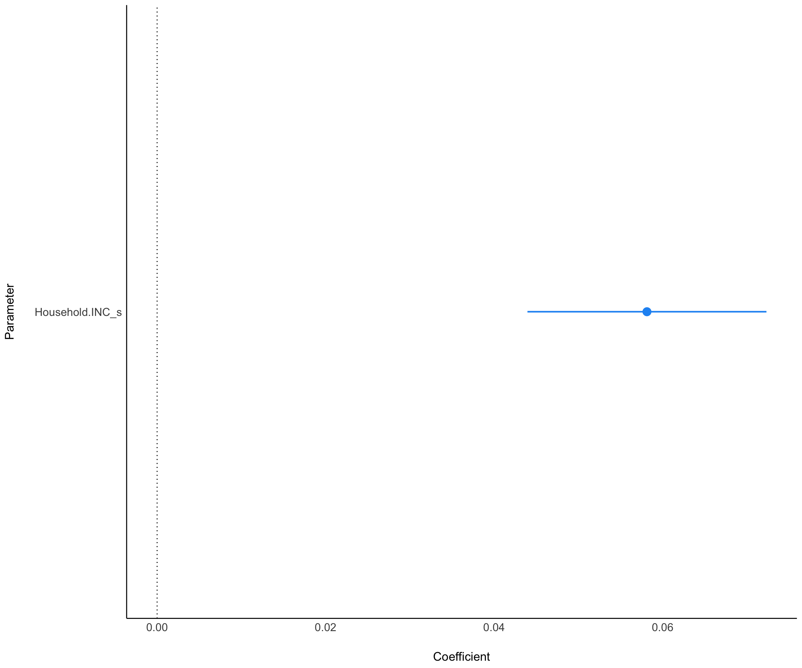
Notes
Additive indicators on the logit scale are non-linear on the data scale. We see this in the previous graph. Thereâs a curve. This is typical of generalised linear models.
do not interpret the signs of the coefficients. For example,
plogis(-3)is 0.0474259, which is a positive probability.here are is no error term (\(\sigma^2\)) in logistic regression. We only estimate the mean. The variances cannot be estimated:
sjPlot::tab_model(home2)
| Â | HomeOwner | ||
|---|---|---|---|
| Predictors | Odds Ratios | CI | p |
| (Intercept) | 4.87 | 4.39 â 5.43 | <0.001 |
| Household.INC_s | 2.06 | 1.76 â 2.43 | <0.001 |
| Observations | 2798 | ||
| R2 Tjur | 0.036 | ||
- we can add points to our graph like this:
plot(ggeffects::ggpredict(home2,
terms = "Household.INC_s[all]"), add.data = TRUE) + scale_x_continuous(limits= c(-1.2,4))
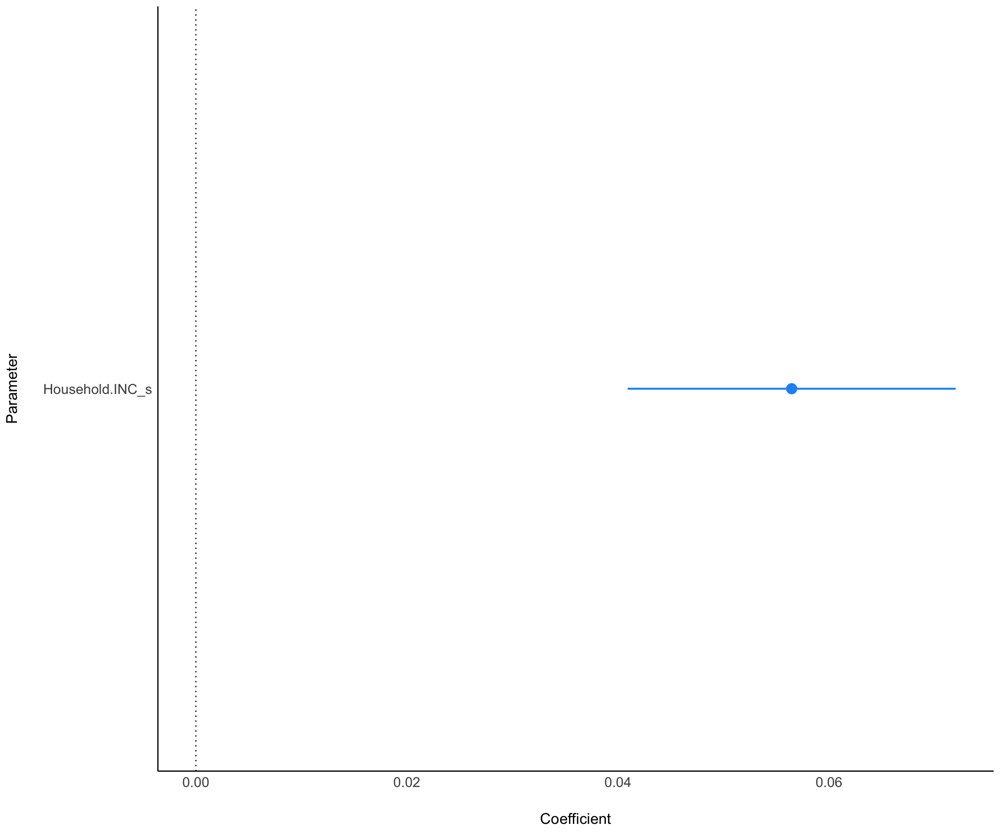
Or to limit our points to the meaningful range:
plot(ggeffects::ggpredict(home2,
terms = "Household.INC_s[all]"), add.data = TRUE) + scale_x_continuous(limits= c(-1.2,4))
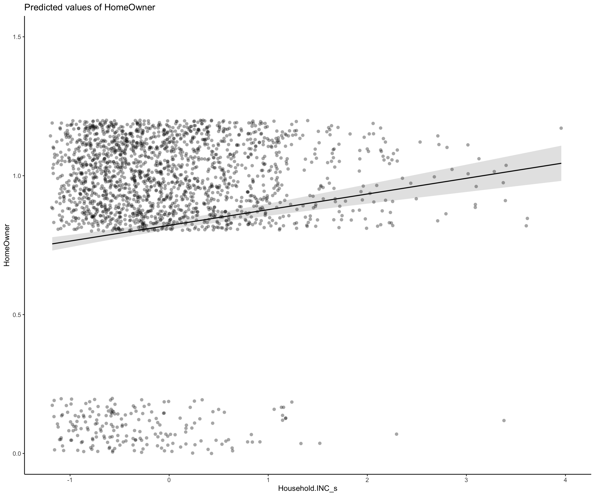
- center (and where it eases interpretation, also scale) your predictor variables.
Uncertainty arises because we only have 17 people in this jittered nz dataset born after 1996:
table(nz$GenCohort)
Gen Boombers: born >= 1946 & b.< 1961
1024
Gen_Silent: born< 1946
208
GenX: born >=1961 & b.< 1980
1253
GenY: born >=1980 & b.< 1996
416
GenZ: born >= 1996
17 ggplot(nz, (aes(GenCohort, Household.INC))) + geom_jitter(alpha = .5)
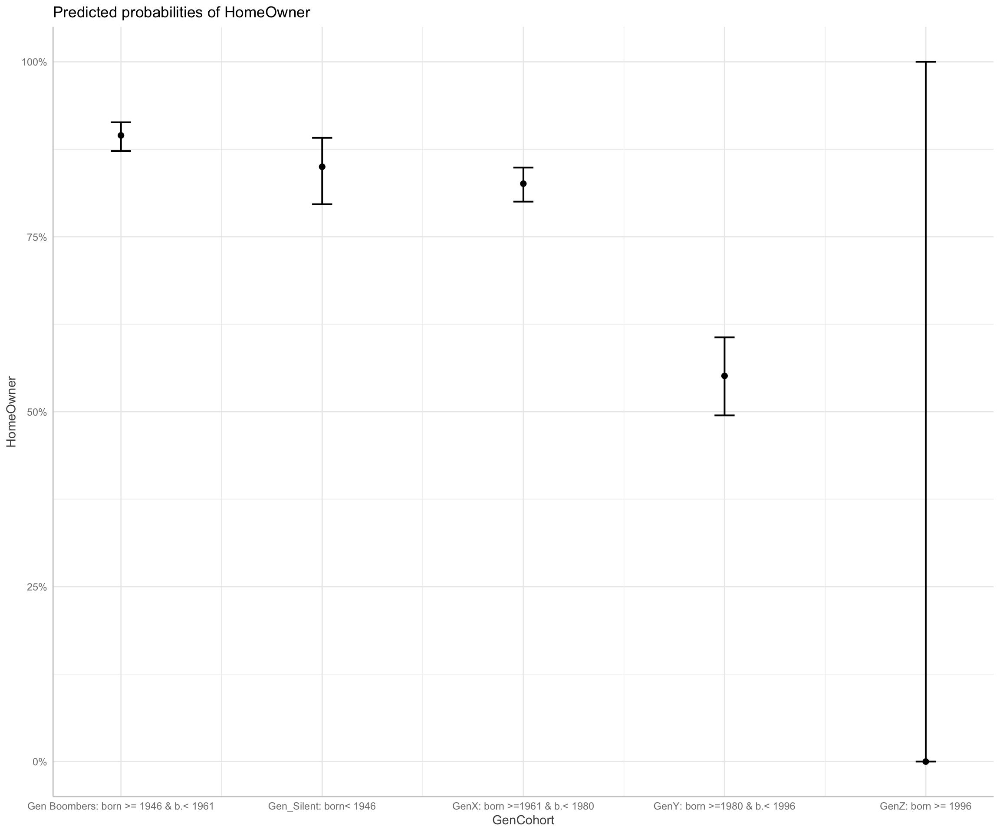
Which model should we prefer?
The model mg2 grealy improves on the BIC performance, indicating that we should prefer this model.
per_home <-performance::compare_performance(home2,mg1,mg2)
per_home
# Comparison of Model Performance Indices
Name | Model | AIC | BIC | Tjur's R2 | RMSE | Sigma | Log_loss | Score_log | PCP | Score_spherical
----------------------------------------------------------------------------------------------------------------
home2 | glm | 2590.320 | 2602.193 | 0.036 | 0.381 | 0.962 | 0.462 | -Inf | 0.708 |
mg1 | glm | 2516.922 | 2546.675 | 0.099 | 0.372 | 0.941 | 0.442 | -Inf | 0.724 | 3.915e-04
mg2 | glm | 2272.307 | 2307.927 | 0.168 | 0.354 | 0.900 | 0.404 | -Inf | 0.748 | 5.159e-04Hereâs a graph:
plot(per_home)
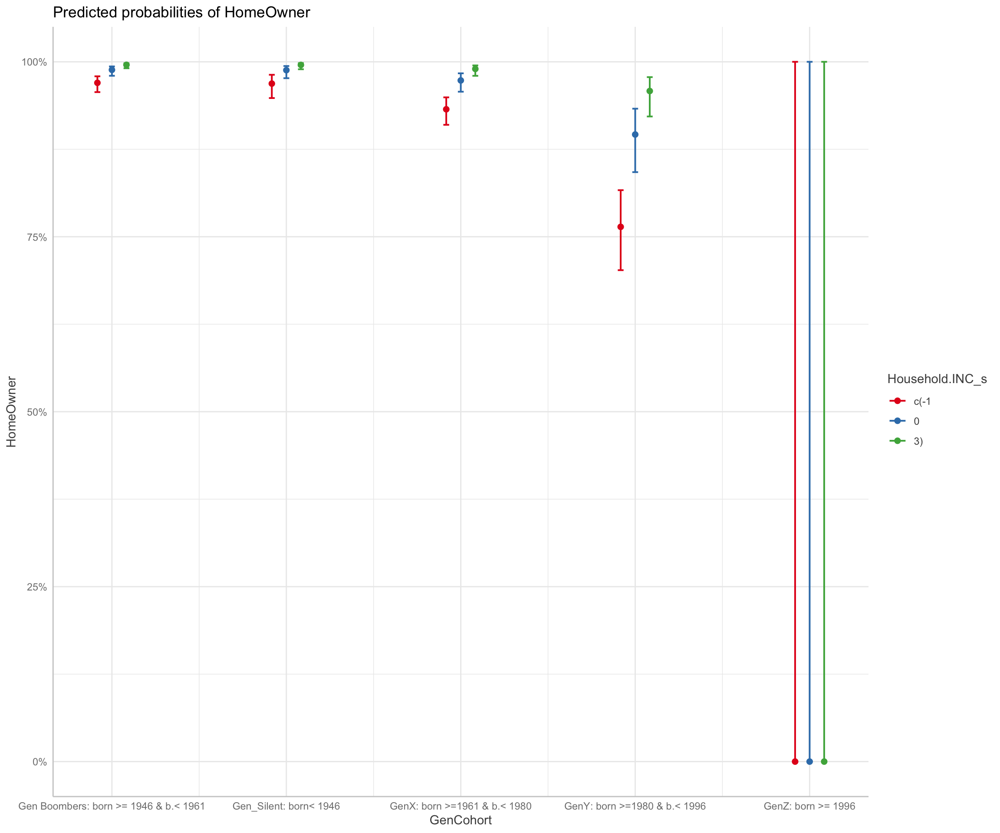
Note that we do not include the model that used fewer cases because, from the vantage point of information theory, this would be comparing apples with organges.
We can use the performance package to check the accuracy of the our models
Compare:
performance_accuracy(mg1)
# Accuracy of Model Predictions
Accuracy: 66.56%
SE: 1.89%-points
Method: Area under CurveWith:
performance_accuracy(mg2)
# Accuracy of Model Predictions
Accuracy: 76.84%
SE: 4.40%-points
Method: Area under CurveAnd this reveals little difference, indicating that with this many data, the outliers donât affect inference.
Count reponses
We use a poisson model cor count data.
Letâs simulate (Gelman and Hill:
n <- 50
x <- runif(n, -2, 2)
a <- 1
b <- 2
out <- a + b * x
set.seed(999)
y <- rpois(n, exp(out)) # mean of poisson is equal to its variance
fake <- data.frame(x=x, y=y)
hist(fake$y)
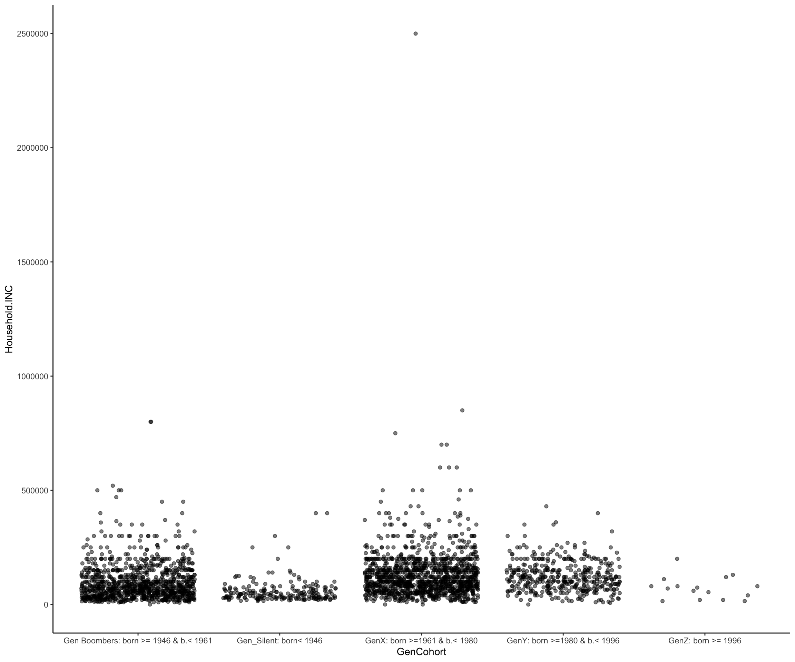
Model
pois1 <- glm(y ~ x, data = fake, family = "poisson")
model_parameters(pois1)
Parameter | Log-Mean | SE | 95% CI | z | p
-------------------------------------------------------------
(Intercept) | 1.05 | 0.10 | [0.86, 1.23] | 10.99 | < .001
x | 2.01 | 0.06 | [1.89, 2.13] | 33.22 | < .001Note that in a poisson model, it is the log of the expected values (not the log of the raw data) that the model estimates:
# this is how to quickly generate the equation
equatiomatic::extract_eq(pois1, use_coefs = TRUE)
\[ \log ({ \widehat{E( \operatorname{y} )} }) = 1.05 + 2.01(\operatorname{x}) \]
We can put this on the data scale
Letâs compare this to a model in which we assume a normal distribution
pois2 <- glm(y ~ x, data = fake) # remove "family = `poisson`)
model_parameters(pois2)
Parameter | Coefficient | SE | 95% CI | t(48) | p
------------------------------------------------------------------
(Intercept) | 16.65 | 3.79 | [ 9.23, 24.07] | 4.40 | < .001
x | 25.80 | 3.35 | [19.24, 32.36] | 7.71 | < .001Quick plot:

Check the models
performance::check_model(pois1)

We can see the linearity assumption is violated:
performance::check_model(pois2)
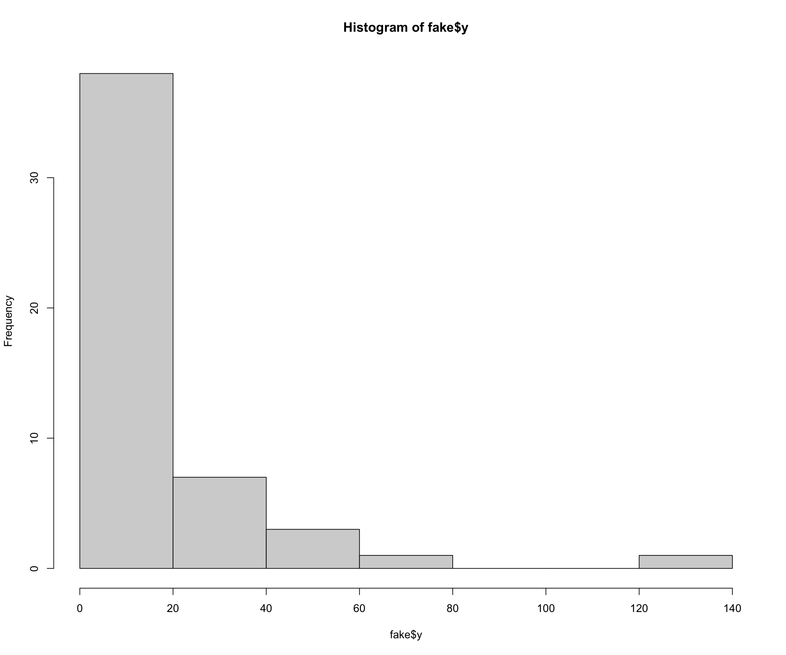
library(splines)
pois3 <- glm(y ~ bs(x), data = fake) # remove "family = `poisson`)
model_parameters(pois3)
Parameter | Coefficient | SE | 95% CI | t(46) | p
-------------------------------------------------------------------------
(Intercept) | -10.12 | 4.58 | [-19.10, -1.14] | -2.21 | 0.032
x [1st degree] | 57.10 | 12.26 | [ 33.08, 81.13] | 4.66 | < .001
x [2nd degree] | -78.86 | 6.43 | [-91.46, -66.26] | -12.27 | < .001
x [3rd degree] | 136.67 | 6.02 | [124.86, 148.48] | 22.69 | < .001library(patchwork)
p_pois1 + p_pois2 + p_pois3 + plot_annotation(title = "comparison of three assumed distributions", tag_levels = 'a',
subtitle = "The Poisson model (a) fits \nThe gaussian model (b) underfitsthe \nThe spline model (c) overfits") +
plot_layout(guides = "collect")
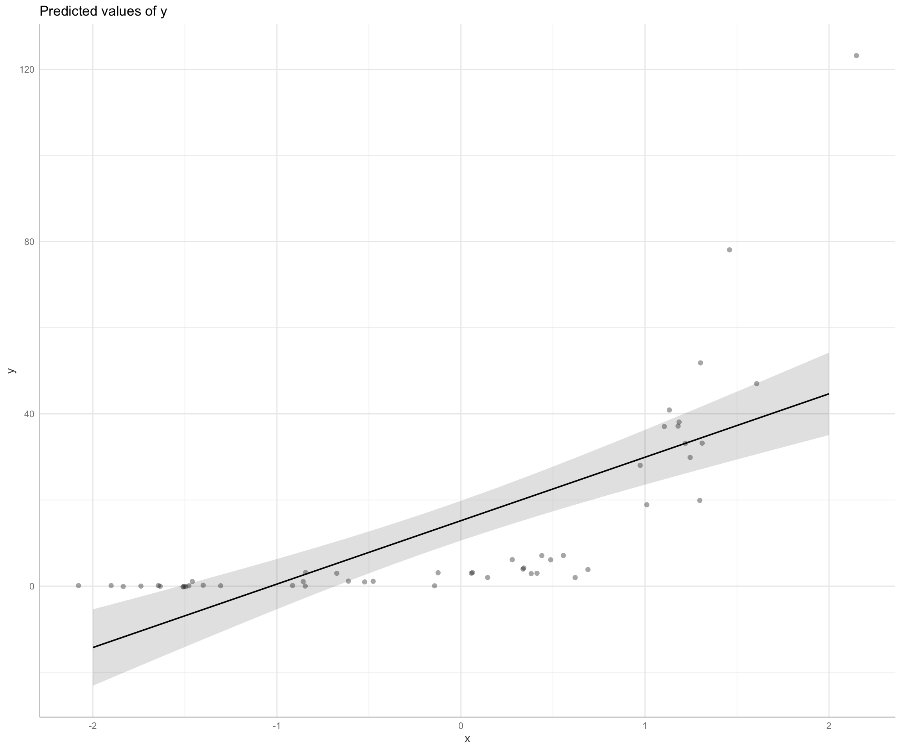
The poisson fits best: this is no surprise: we simulated poisson outcomes.
per_pois <-performance::compare_performance(pois1,pois2,pois3)
per_pois
# Comparison of Model Performance Indices
Name | Model | AIC | BIC | RMSE | Sigma | R2 | Nagelkerke's R2 | Score_log | Score_spherical
-----------------------------------------------------------------------------------------------------------
pois1 | glm | 219.043 | 222.867 | 4.118 | 0.819 | | 1.000 | -2.150 | 0.091
pois2 | glm | 469.529 | 475.265 | 24.937 | 25.451 | 0.553 | | |
pois3 | glm | 341.527 | 351.087 | 6.661 | 6.945 | 0.968 | | | plot(per_pois)
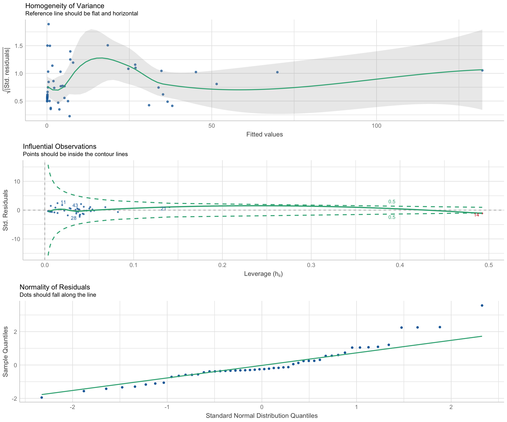
Over-dispersion
The expected value of a poisson and the variance of poisson variable are the same: lamda. However often (typically) this assumption is violated, and the random variables in oneâs data set are over (and occassionally underdispersed)
To see this, a poisson with lamnda = 10
library(MASS)
n <- 100
x <- runif(n, -2, 2)
a <- 1
b <- 2
out <- a + b * x
set.seed(999)
y <- rnegbin(n, mu =exp(out), theta = 2) # mean overdistribution parameter
fake2 <- data.frame(x=x, y=y)
hist(fake2$y, breaks = 50)
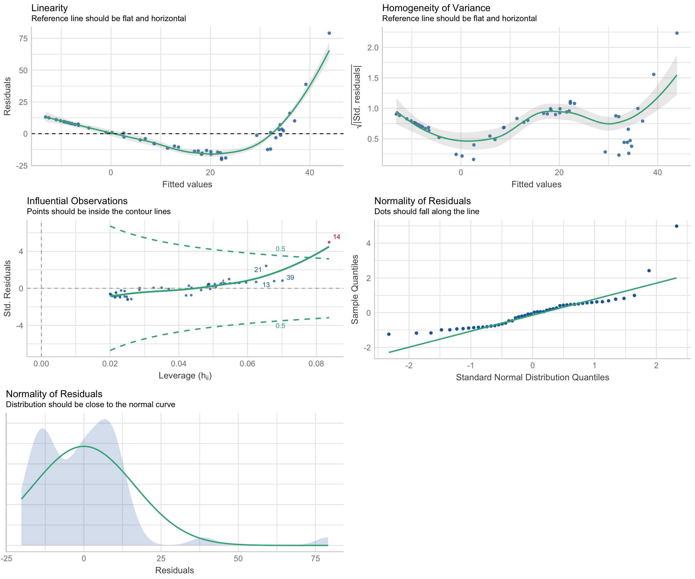
We fit a poisson model:
Call:
glm(formula = y ~ x, family = poisson, data = fake2)
Deviance Residuals:
Min 1Q Median 3Q Max
-12.1998 -1.5116 -0.4440 0.3219 9.9892
Coefficients:
Estimate Std. Error z value Pr(>|z|)
(Intercept) 1.03522 0.08023 12.90 <2e-16 ***
x 1.96100 0.05415 36.22 <2e-16 ***
---
Signif. codes:
0 '***' 0.001 '**' 0.01 '*' 0.05 '.' 0.1 ' ' 1
(Dispersion parameter for poisson family taken to be 1)
Null deviance: 4023.01 on 99 degrees of freedom
Residual deviance: 809.75 on 98 degrees of freedom
AIC: 1040
Number of Fisher Scoring iterations: 5performance::check_overdispersion(nb1)
# Overdispersion test
dispersion ratio = 7.561
Pearson's Chi-Squared = 741.011
p-value = < 0.001Try a negative binomial model
nb2<- glm.nb(y ~ x, data = fake2)
compare_models(nb1,nb2)
Parameter | nb1 | nb2
----------------------------------------------------
(Intercept) | 1.04 (0.88, 1.19) | 0.97 (0.70, 1.25)
x | 1.96 (1.85, 2.07) | 1.99 (1.75, 2.24)
----------------------------------------------------
Observations | 100 | 100Zero-inflated poisson regression
In the nz dataset, volunteering (hours of charity) look to be zero-inflated, and also over-dispersed.
hist(nz$HoursCharity, breaks = 100)
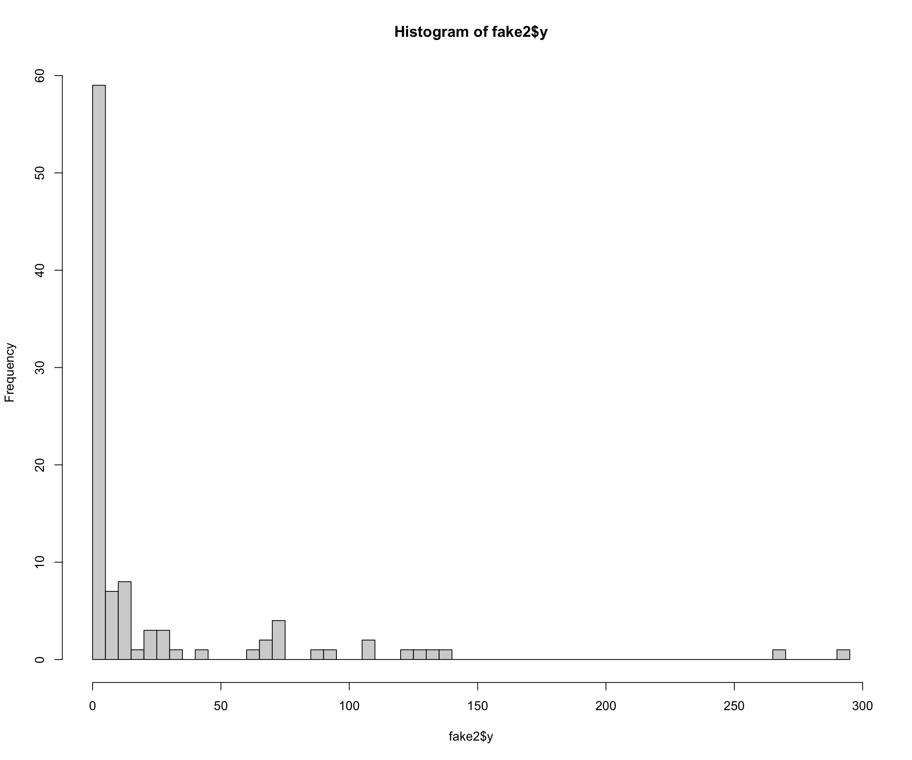
We can quickly check the proportion of people who report zero volunteering:
We can get a sense of over-dispersion by looking at the ration of the sample variation to the sample mean?
Thereâs about 1.68 more dispersion that a poisson model would expect
Letâs use the performance package to formally check both zero-inflation and overdispersed
z1 <-glm(HoursCharity ~ 1, family = "poisson", data = nz)
check_zeroinflation(z1)
# Check for zero-inflation
Observed zeros: 1992
Predicted zeros: 536
Ratio: 0.27Next check over-dispersion:
check_overdispersion(z1)
# Overdispersion test
dispersion ratio = 13.196
Pearson's Chi-Squared = 37595.179
p-value = < 0.001And indeed, we find both.
I use the brms package to estimate zero-inflated and/or negative binomial models
library(brms)
# Requires integer output
nz$HoursCharity <- as.integer(nz$HoursCharity)
#
nz['Household.INC_s'] = as.data.frame(scale(nz$Household.INC))
# Scale religion variabile
nz['Relid_s'] = as.data.frame(scale(nz$Relid))
b0<- brms::brm(HoursCharity ~ Relid_s + Household.INC_s,
family = "zero_inflated_poisson",
file = here::here("models", "zeroinflated_poisson_volunteer"),
data = nz)
summary(b0)
Family: zero_inflated_poisson
Links: mu = log; zi = identity
Formula: HoursCharity ~ Relid_s + Household.INC_s
Data: nz (Number of observations: 2796)
Samples: 4 chains, each with iter = 2000; warmup = 1000; thin = 1;
total post-warmup samples = 4000
Population-Level Effects:
Estimate Est.Error l-95% CI u-95% CI Rhat
Intercept 1.70 0.02 1.67 1.73 1.00
Relid_s 0.00 0.01 -0.02 0.03 1.00
Household.INC_s -0.09 0.02 -0.12 -0.05 1.00
Bulk_ESS Tail_ESS
Intercept 3785 3068
Relid_s 4501 3362
Household.INC_s 3704 3054
Family Specific Parameters:
Estimate Est.Error l-95% CI u-95% CI Rhat Bulk_ESS
zi 0.70 0.01 0.68 0.72 1.00 3849
Tail_ESS
zi 2989
Samples were drawn using sampling(NUTS). For each parameter, Bulk_ESS
and Tail_ESS are effective sample size measures, and Rhat is the potential
scale reduction factor on split chains (at convergence, Rhat = 1).My preferred way of plotting
Predicted effects of religious identification on volunteering:
plot(
conditional_effects(
b0,
spaghetti = TRUE,
nsamples = 100,
select_points = 0.1
),
points = TRUE,
ask = FALSE,
point_args = list(alpha = 0.1,
width = .02)
)[[1]] # note this command controls which facet
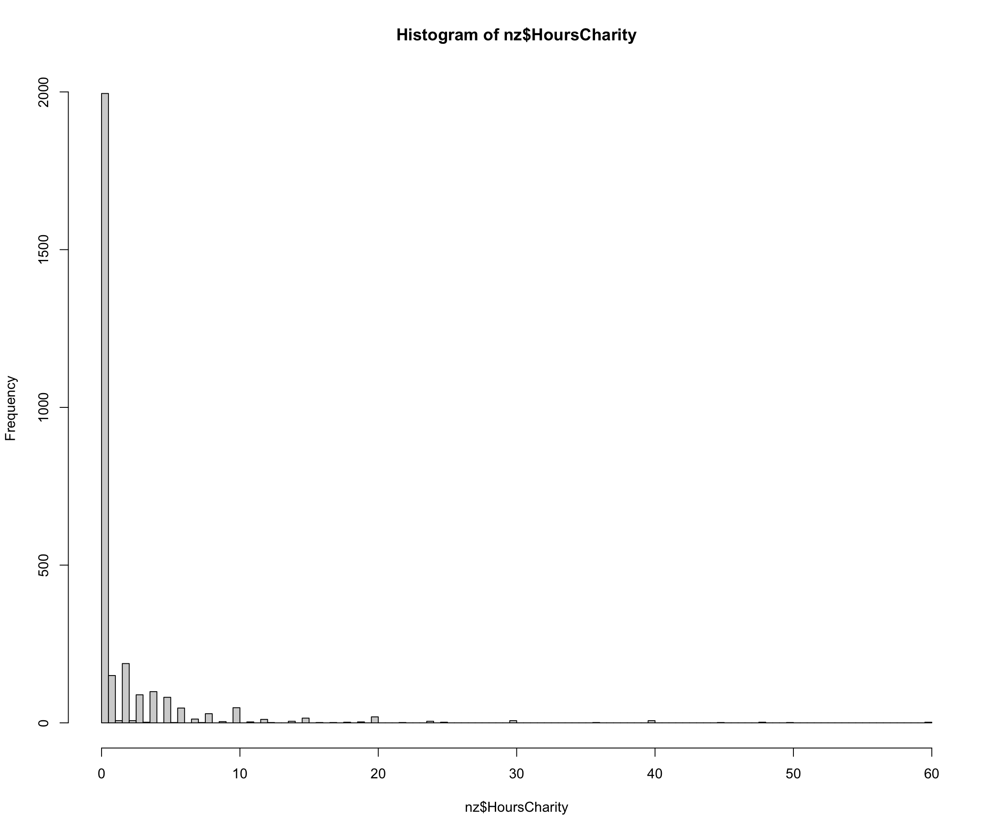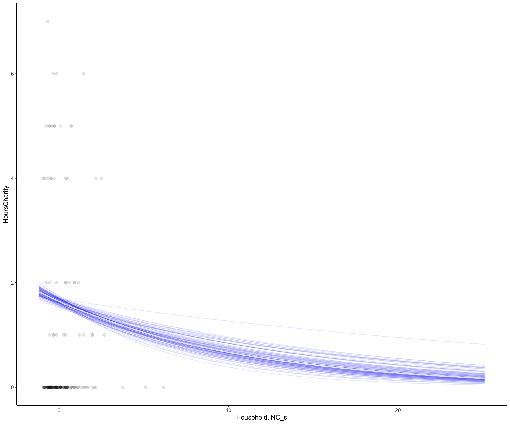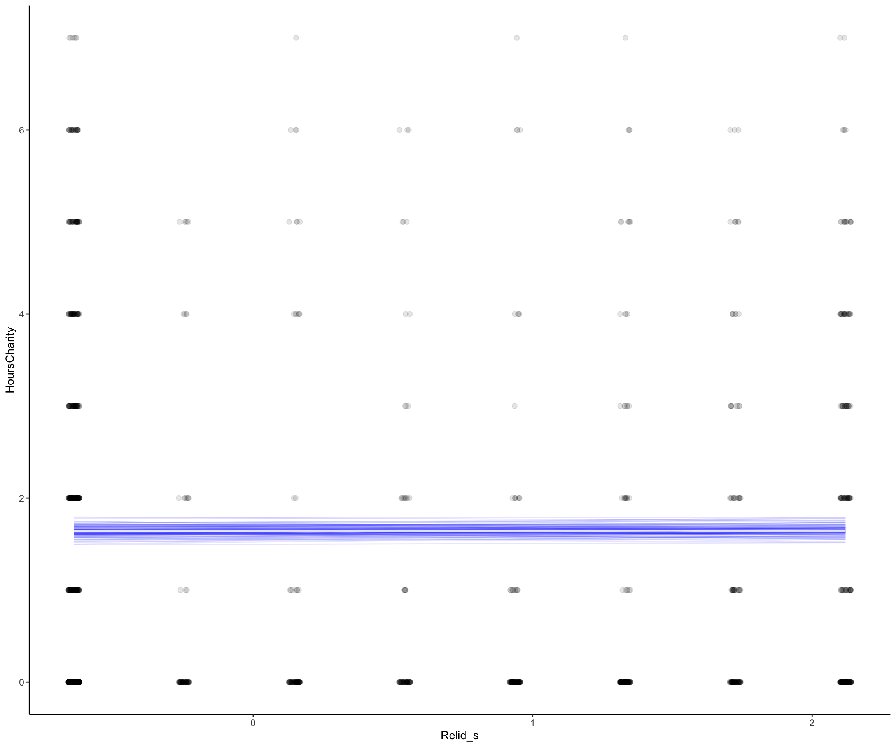
Predicted effects of income:
plot(
conditional_effects(
b0,
spaghetti = TRUE,
nsamples = 100,
select_points = 0.1),
points = TRUE,
ask = FALSE,
point_args = list(alpha = 0.1,
width = .02)
)[[2]] # note this command controls which facet
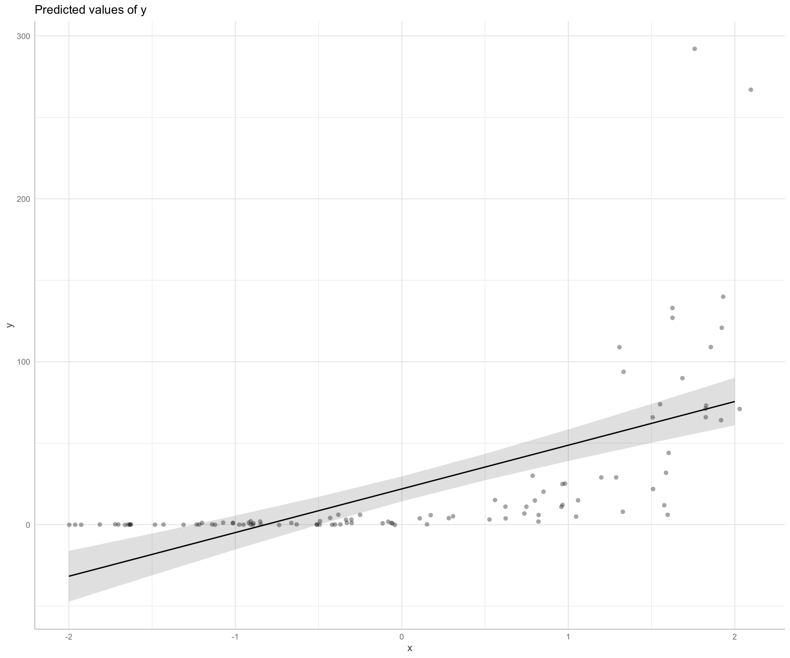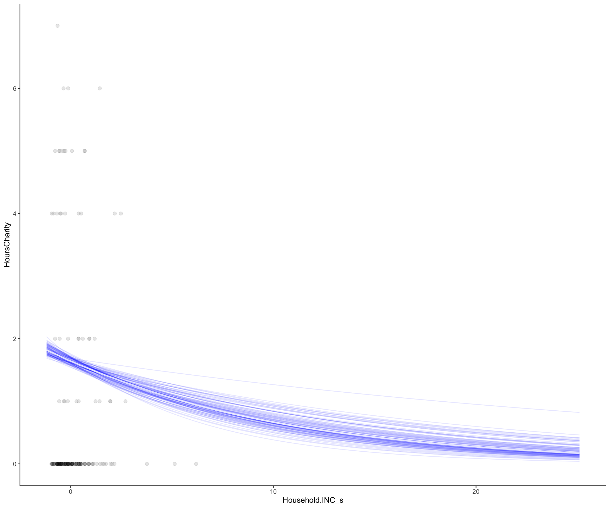
summary(b1)
Family: zero_inflated_negbinomial
Links: mu = log; shape = identity; zi = identity
Formula: HoursCharity ~ Relid_s + Household.INC_s
Data: nz (Number of observations: 2796)
Samples: 4 chains, each with iter = 2000; warmup = 1000; thin = 1;
total post-warmup samples = 4000
Population-Level Effects:
Estimate Est.Error l-95% CI u-95% CI Rhat
Intercept 0.89 0.17 0.52 1.17 1.00
Relid_s 0.21 0.06 0.11 0.33 1.00
Household.INC_s -0.07 0.05 -0.16 0.03 1.00
Bulk_ESS Tail_ESS
Intercept 949 885
Relid_s 1456 1698
Household.INC_s 2061 2040
Family Specific Parameters:
Estimate Est.Error l-95% CI u-95% CI Rhat Bulk_ESS
shape 0.28 0.07 0.16 0.42 1.00 938
zi 0.35 0.11 0.07 0.50 1.00 939
Tail_ESS
shape 914
zi 697
Samples were drawn using sampling(NUTS). For each parameter, Bulk_ESS
and Tail_ESS are effective sample size measures, and Rhat is the potential
scale reduction factor on split chains (at convergence, Rhat = 1).Compare fit. Here, negative numbers are worse.
b0 <- add_criterion(b0, "loo")
b1 <- add_criterion(b1, "loo")
w <-loo_compare(b0, b1, criterion = "loo")
w
elpd_diff se_diff
b1 0.0 0.0
b0 -1514.8 207.5Recall weâd been using and AIC/BIC convention to estimate improvements in goodness of fit.
We can translate the loo_compare output into a waic convention as:
cbind(waic_diff = w[, 1] * -2,
se = w[, 2] * 2)
waic_diff se
b1 0.000 0.0000
b0 3029.657 414.9648And we can see that the negative binomial model fits much better.
Predicting zeros
The estimates in the graphs above are only for the positive (non-zero components of the model). Letâs look at the results again:
summary(b1)
Family: zero_inflated_negbinomial
Links: mu = log; shape = identity; zi = identity
Formula: HoursCharity ~ Relid_s + Household.INC_s
Data: nz (Number of observations: 2796)
Samples: 4 chains, each with iter = 2000; warmup = 1000; thin = 1;
total post-warmup samples = 4000
Population-Level Effects:
Estimate Est.Error l-95% CI u-95% CI Rhat
Intercept 0.89 0.17 0.52 1.17 1.00
Relid_s 0.21 0.06 0.11 0.33 1.00
Household.INC_s -0.07 0.05 -0.16 0.03 1.00
Bulk_ESS Tail_ESS
Intercept 949 885
Relid_s 1456 1698
Household.INC_s 2061 2040
Family Specific Parameters:
Estimate Est.Error l-95% CI u-95% CI Rhat Bulk_ESS
shape 0.28 0.07 0.16 0.42 1.00 938
zi 0.35 0.11 0.07 0.50 1.00 939
Tail_ESS
shape 914
zi 697
Samples were drawn using sampling(NUTS). For each parameter, Bulk_ESS
and Tail_ESS are effective sample size measures, and Rhat is the potential
scale reduction factor on split chains (at convergence, Rhat = 1).The probability of non-volunteering in the preferred model for people who are at the mean Religious Identification and mean Household income in this population is plogis(.35) or 0.5866176. More often than not, we should predict zeros in this population. What predicts the zero component of the model? We can use this syntax:
Letâs look at the results:
sjPlot::tab_model(b2)
| Â | HoursCharity | ||
|---|---|---|---|
| Predictors | Incidence Rate Ratios | CI (95%) | |
| Count Model | |||
| Intercept | 3.40 | 2.85 â 3.95 | |
| Relid_s | 1.02 | 0.94 â 1.11 | |
| Household.INC_s | 0.93 | 0.84 â 1.03 | |
| Zero-Inflated Model | |||
| Intercept | 1.06 | 0.72 â 1.38 | |
| Relid_s | 0.52 | 0.42 â 0.61 | |
| Household.INC_s | 1.02 | 0.87 â 1.17 | |
| Observations | 2796 | ||
| R2 Bayes | 0.015 | ||
We can plot the results using ggeffects::
sjPlot::tab_model(b2)
| Â | HoursCharity | ||
|---|---|---|---|
| Predictors | Incidence Rate Ratios | CI (95%) | |
| Count Model | |||
| Intercept | 3.40 | 2.85 â 3.95 | |
| Relid_s | 1.02 | 0.94 â 1.11 | |
| Household.INC_s | 0.93 | 0.84 â 1.03 | |
| Zero-Inflated Model | |||
| Intercept | 1.06 | 0.72 â 1.38 | |
| Relid_s | 0.52 | 0.42 â 0.61 | |
| Household.INC_s | 1.02 | 0.87 â 1.17 | |
| Observations | 2796 | ||
| R2 Bayes | 0.015 | ||
Or using my preferred method
Predicted effects of religious identification:
plot(
conditional_effects(
b2,
spaghetti = TRUE,
nsamples = 100,
select_points = 0.1
),
points = TRUE,
ask = FALSE,
point_args = list(alpha = 0.05,
width = .02)
)[[1]] + # note this command controls which facet
ylim(0,5)
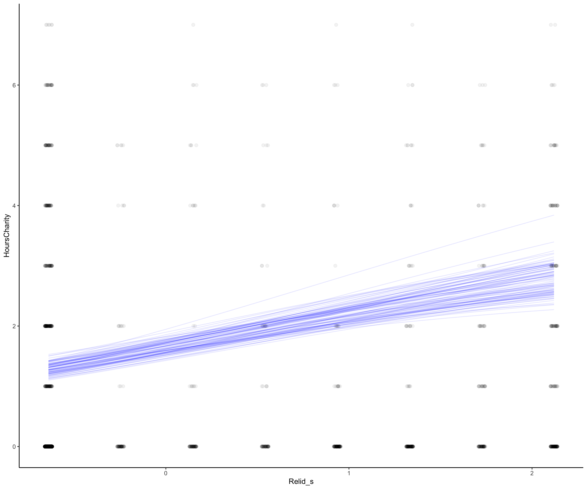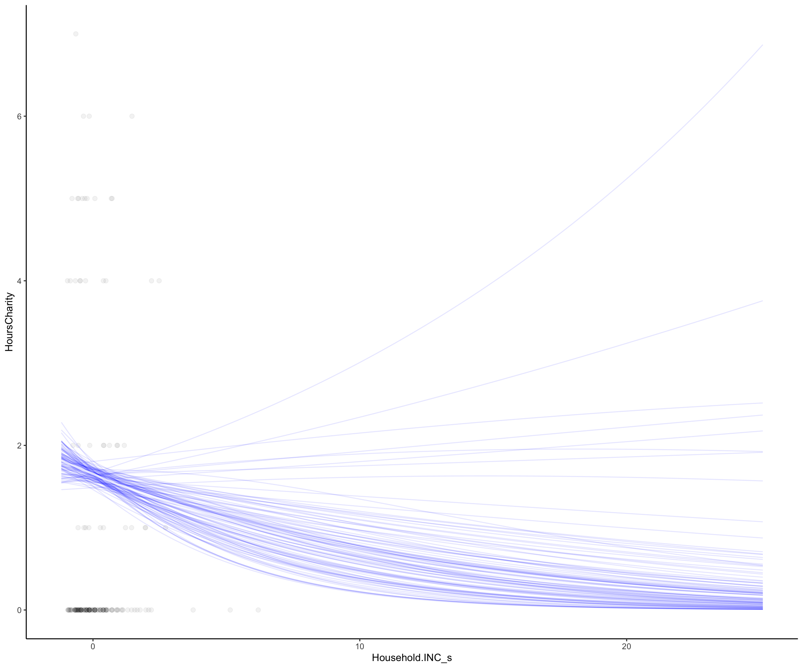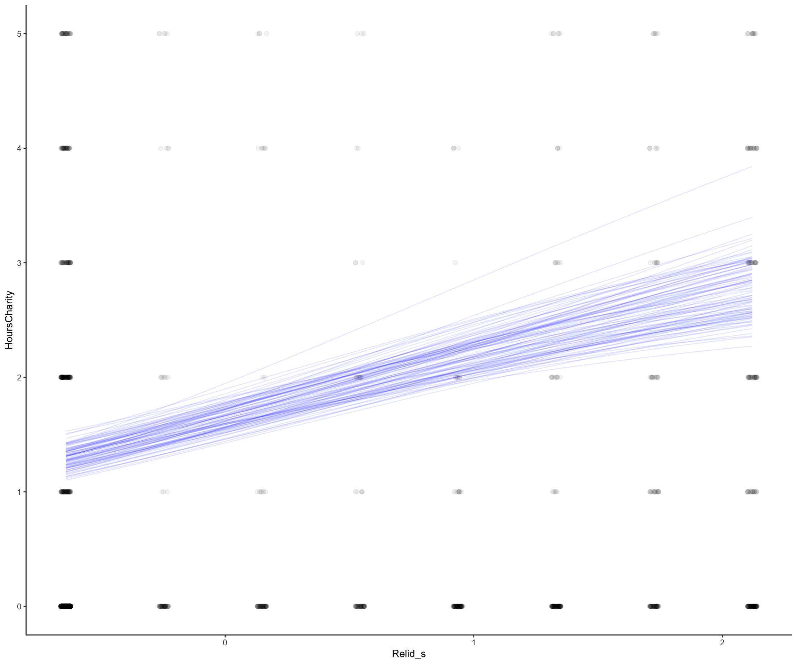
Predicted effects of income:
plot(
conditional_effects(
b2,
spaghetti = TRUE,
nsamples = 100,
select_points = 0.1 ),
points = TRUE,
ask = FALSE,
point_args = list(alpha = 0.1,
width = .02)
)[[2]] + # note this command controls which facet
xlim(0, 5) + ylim(0,5)
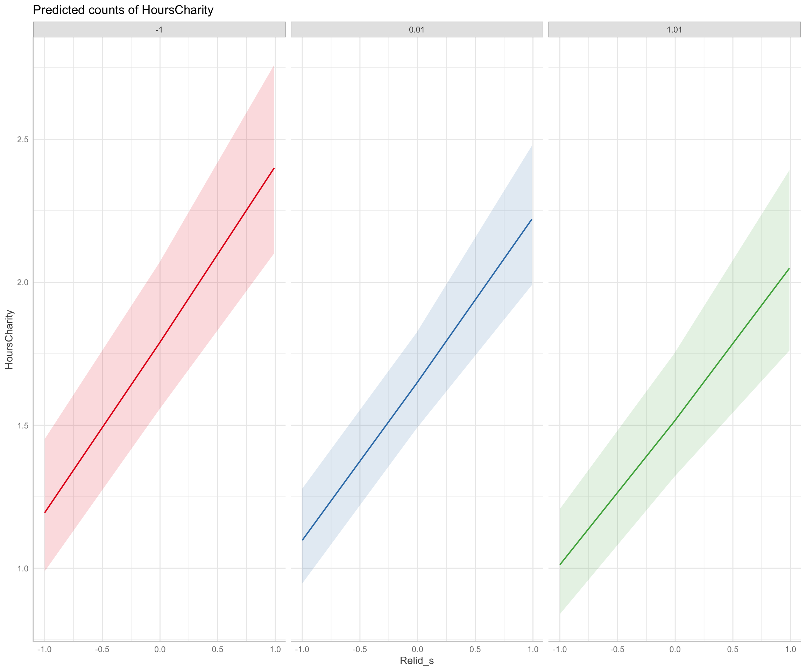
Note:
Models of class brmsfit always condition on the zero-inflation component, if the model has such a component. Hence, there is no type = âzero_inflatedâ nor type = âzi_randomâ for brmsfit-models, because predictions are based on draws of the posterior distribution, which already account for the zero-inflation part of the model.
Comparing models we find that adding the prdictors improves the model
b2 <- add_criterion(b2, "loo")
w <-loo_compare(b0, b1, b2, criterion = "loo")
w
elpd_diff se_diff
b2 0.0 0.0
b1 -50.0 10.1
b0 -1564.8 206.1Again we can use an -2 * loglik analogue
cbind(waic_diff = w[, 1] * -2,
se = w[, 2] * 2)
waic_diff se
b2 0.0000 0.00000
b1 100.0416 20.14189
b0 3129.6983 412.13260Another way to see this is to look at the posterior predictive checks on the models
Zero-inflated poisson
Zero-inflated negative binomial with no predictors for the zero-inflation part.
Zero-inflated negative binomial + predictors for the zero-inflation part
Ordinal outcomes
Ordinal predictors (Monotonic effects)
and Liddell and Kruschke in advising the use of ordinal models for non-metric data such as the Kessler-6 items. Here we employ a categorical model in which the observed variable y has a probability of being equal to response option + 1 latent thresholds. An ordinal model assumes that an observed ordinal indicator measures a latent continuous variable . The Kessler-6 has five ordinal response options for indicating frequency of feeling distress during the past 30 days: âNone Of The Time,â âA Little Of The Time,â âSome Of The Time,â âMost Of The Time,â âAll Of The Timeâ hence six thresholds. The Kessler-6 distress indicators are: âFeeling Hopelessness;â âFeeling so Depressed Nothing Could Cheer You Up;â âFeeling Nervous or Fidgety;â âFeeling Everything is an Effort;â âFeeling Worthless;â âFeeling Nervous.â We simultaneously modelled each of these six outcomes within a single model. Below, the superscript \(k\) is denotes the \(k = 1\dots6\) Kessler-6 outcomes. Residuals for cumulative categorical models are not identified, so are fixed to 1. \(\alpha_{j0}^k\) denotes the \(t = 1\dots 5\) intercepts estimated for the ordinal model, which assumed a cumulative logit distribution for the outcome, and where the lowest response level is modelled as zero, hence four intercepts are estimated for each Kessler- 6 response indicator. \[\mathbf{\beta}\] denotes the individual-level predictors, in this case âEmploymentâ
\[\begin{align} y^k \sim \text{Ordered}(\mu_t^k) \\ \text{CumLogit}(\mu_t^k) = \alpha_t^k +\beta^k \\ \alpha_t^k = \alpha_{t0}^k +\alpha^k_c \\ \alpha_{t0}^k \sim \text{StudentT}(3,0,10)\\ \alpha_c^k \sim \text{StudentT}^+(3,0,10)\\ \boldsymbol{\beta^k}\sim \text{Normal}(0,1) \end{align}\]
Bonus: Latent Profile Analysis
Latent Profile Analysis
nzf<-nz %>%
select( FeelHopeless,
FeelDepressed,
FeelRestless,
EverythingIsEffort,
FeelWorthless,
FeelNervous) %>%
mutate_if(., is.factor, ~ as.numeric(as.integer(.x)))
out<-nzf %>%
dplyr::select( FeelHopeless,
FeelDepressed,
FeelRestless,
EverythingIsEffort,
FeelWorthless,
FeelNervous)%>%
single_imputation() %>%
tidyLPA::estimate_profiles(4)
out%>%
plot_profiles(add_line = TRUE)
Acknowledgments and References
Gelman, Hill, and Vehtari (2020)
This is a paraphrase of J L Austen, I think from Sense and Sensibilia; Iâll needd to look up the referenceâ©ï¸